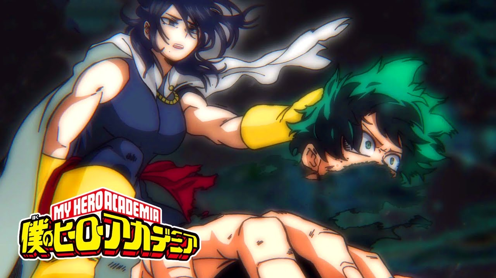
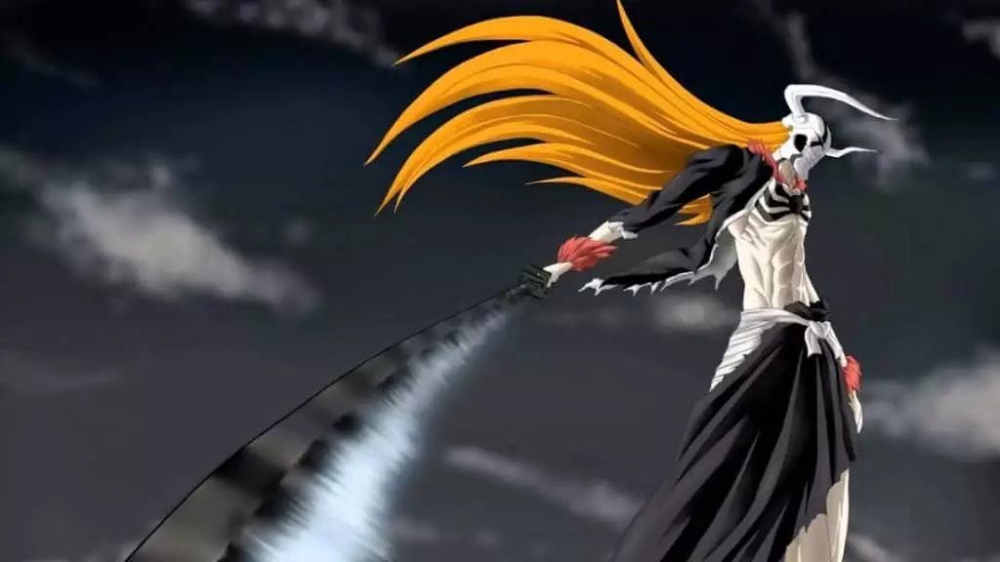
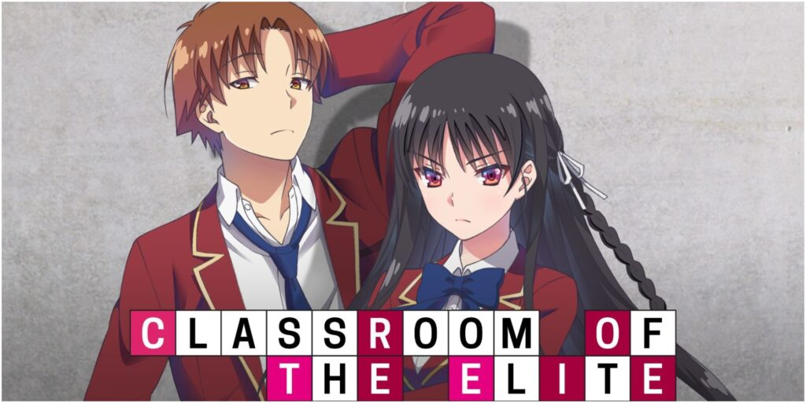

La temporada 6 de Boku no Hero Academia concreta su estreno

"Boku no Hero Academia" es seguramente uno de los mayores fenómenos de la industria del anime a día de hoy, e incluso si la temporada 5 seguramente puede considerarse como la más 'floja' hasta la fecha (a excepción de un arco villano final que me parece un lujo), la realidad es que hay mucho hype por lo que se viene con la temporada 6. Ahora, finalmente se concreta cuándo se producirá el estreno de la siguiente fase del anime en cuestión.
Leer mas sobre esta noticia
Bleach se estrenará en octubre de 2022

Los fans de Bleach tienen motivos para estar muy contentos. Durante la celebración de la Jump Festa 2022, se ha revelado un primer tráiler promocional de la nueva y última temporada del anime, que adaptará el arco final del manga escrito e ilustrado por Tite Kubo y que se estrenará en octubre de 2022. Además, también se ha revelado un primer cartel promocional
Leer mas sobre esta noticia
Classroom of the Elite confirma la fecha de estreno de su temporada 2

Los fans de Bleach tienen motivos para estar muy contentos. Durante la celebración de la Jump Festa 2022, se ha revelado un primer tráiler promocional de la nueva y última temporada del anime, que adaptará el arco final del manga escrito e ilustrado por Tite Kubo y que se estrenará en octubre de 2022. Además, también se ha revelado un primer cartel promocional
Leer mas sobre esta noticia